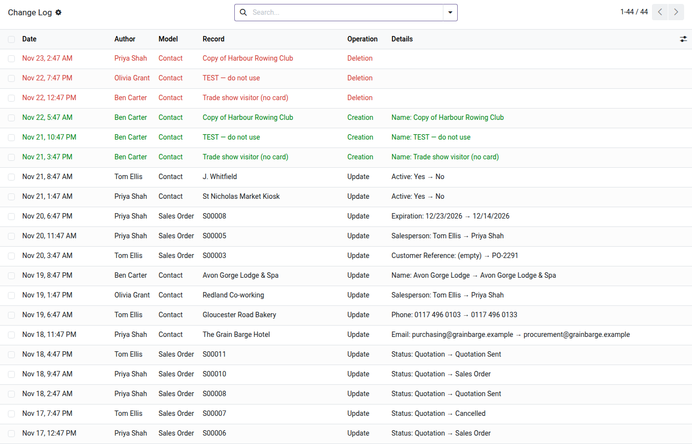
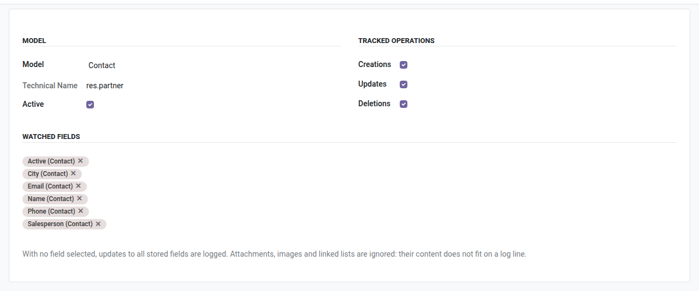

Who created, changed or deleted what — on the models you choose, without writing a line of code.
Odoo's native tracking only covers fields marked "tracking" on models that have a chatter. A price changed on a product form, a bank account rewritten, a line deleted from a technical table: none of it leaves a trace. The day you need to understand what happened, there is nothing to read.
Reference : C-STU → CLI-0067.Creations in green, deletions in red, changes written out with the old and the new value, and the author on every line.

Choose the operations to log and, if you want, the fields to watch: here name, email, phone, salesperson, city and archiving of contacts.

Logging tells you what happened; access segregation prevents it from happening. The OdooSkills range includes some fifteen segregation modules — by sales team, by department, by project, by accounting journal, by warehouse. Full catalog: apps.odooskills.com.
License LGPL-3 — compatible with Odoo 20.0 Community and Enterprise. Support: apps@odooskills.com.